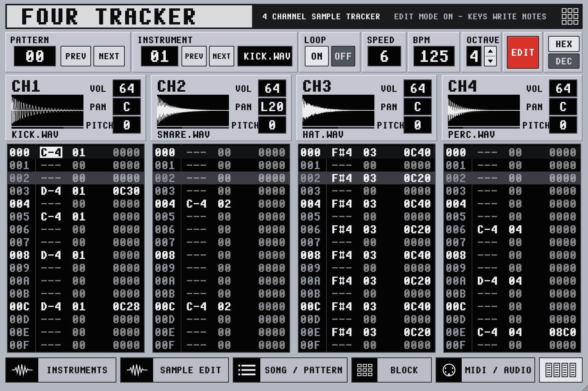
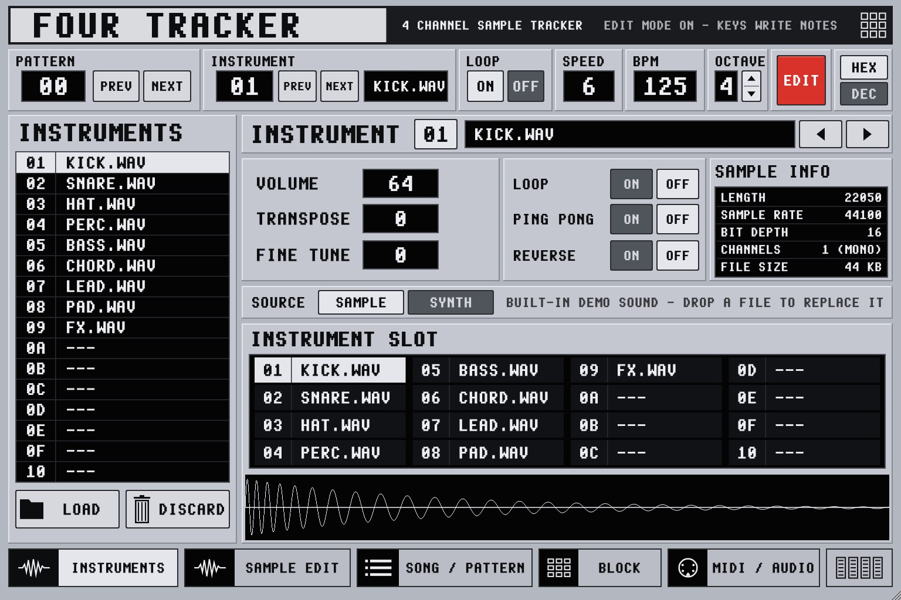
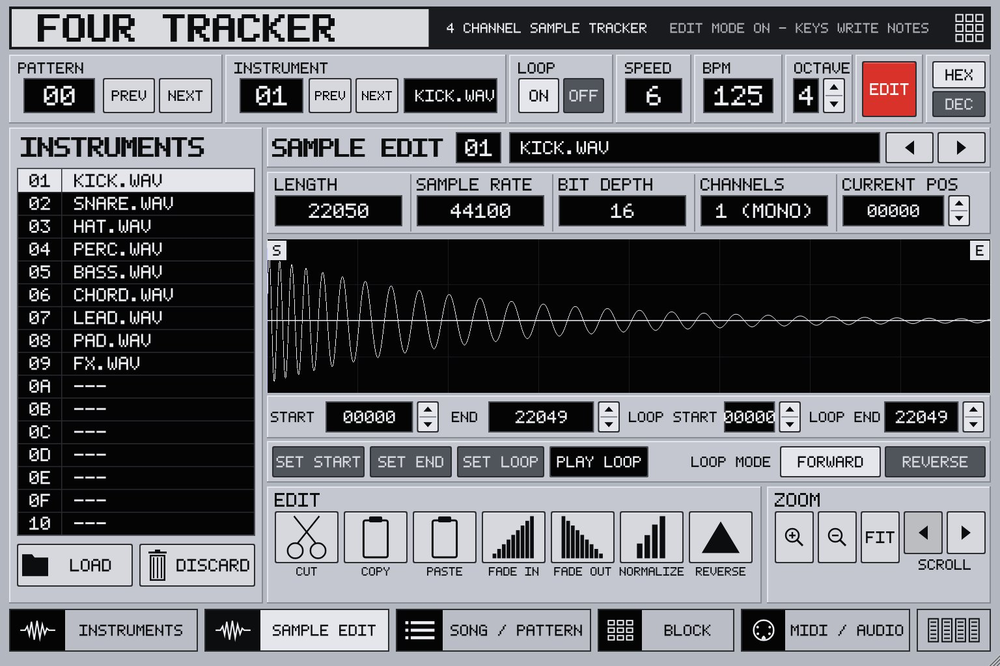
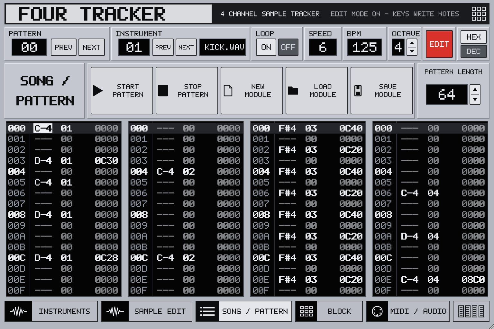
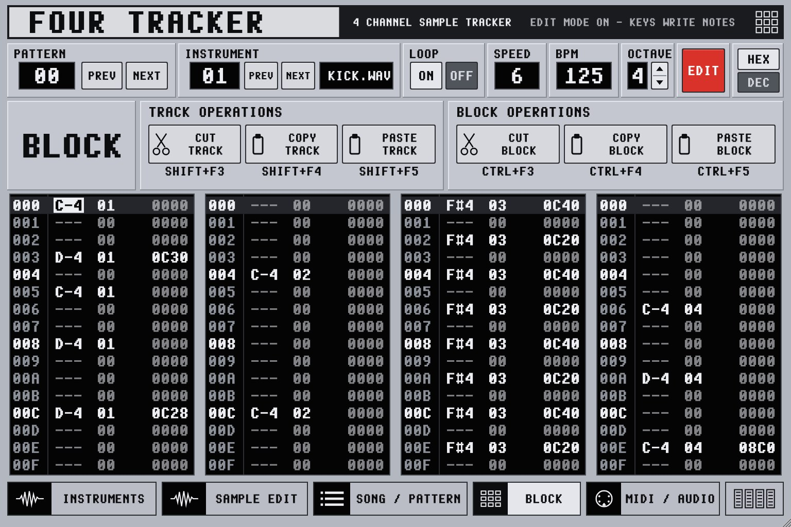
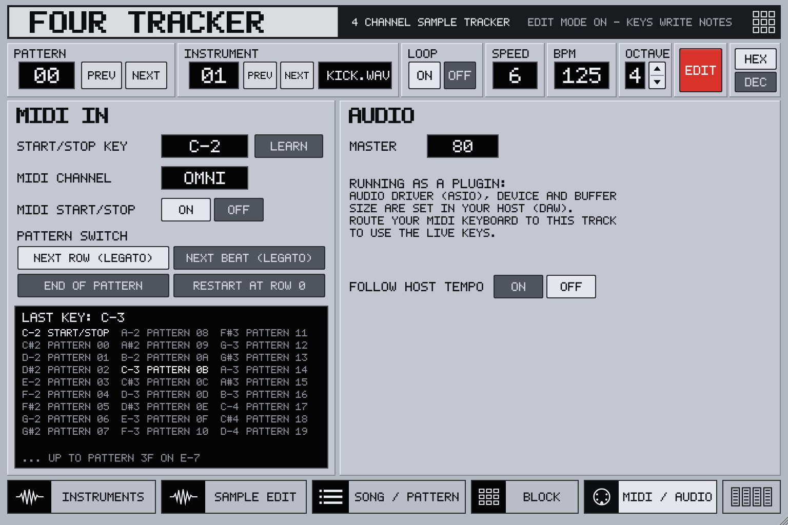
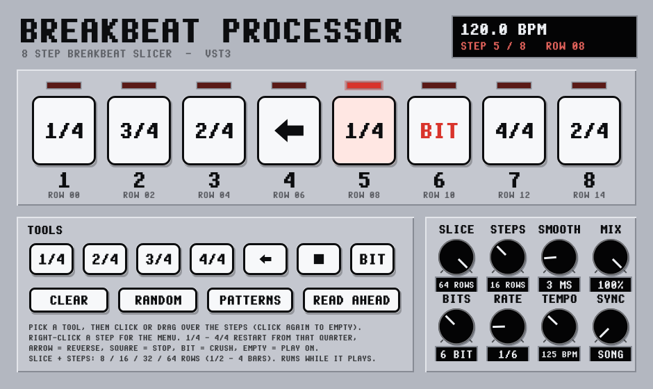
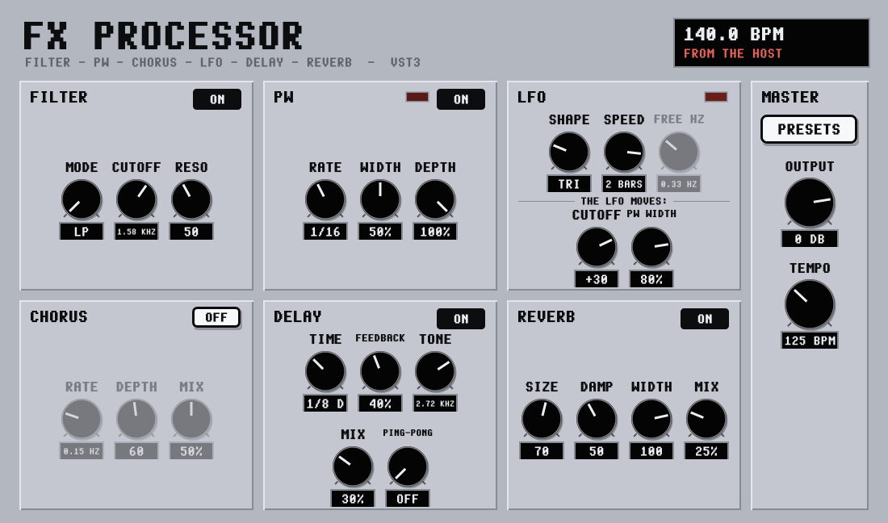

Classic tracker patterns
1 to 16 tracks (add them one at a time with + / −), 64 patterns of up to 256 rows, note · instrument · effect in every cell, hex or decimal.
A free sample tracker in the style of ProTracker and FastTracker 2, with 1 to 16 tracks, that you play live: every key on your MIDI keyboard is a pattern.

C-2 starts and stops. Every key from C#2 upwards picks a pattern, up to 64 of them. Change pattern while it plays and the music carries on in time, no restart. Try it on the keys below.
Switches on the next row and keeps the position. Sounds that ring, keep ringing. The default.
Waits for the next beat (every 4th row), so switches always land in time.
The current pattern plays to its end, then the new one starts from row 00.
Cuts straight to the new pattern from the top. A hard cut as an effect.
Everything a ProTracker or FastTracker user expects, built for a MIDI keyboard and a DAW.
1 to 16 tracks (add them one at a time with + / −), 64 patterns of up to 256 rows, note · instrument · effect in every cell, hex or decimal.
Arpeggio, portamento, vibrato, retrigger, note delay, pattern loop and the rest, with the familiar numbers.
WAV, AIFF, FLAC, Ogg and MP3, plus Amiga IFF 8SVX and raw 8-bit samples straight off ProTracker and OctaMED disks. The built-in browser plays each sample as you arrow through the folder. Or make any slot a synth: SYNTH 1 (one waveform, ADSR, resonant filter, distortion, accent) or SYNTH 2 (two oscillators with PW / PWM on every wave, a filter envelope, a tempo-synced LFO, chorus, delay and reverb, and 26 trance, italo disco and 80s patches). Every knob can be MIDI-learned. A free sample pack with 88 drum, bass and synth sounds comes with the installer.
Start, end and loop points, ping-pong and reverse, cut, paste, fades, normalize and OctaMED-style MIX of two samples. Ctrl+A / C / X / V. 16 instrument slots.
Cut, copy and paste whole tracks or whole patterns, undo, SPACING 0-32 rows for the cursor, octaves C-0 to B-7. CHORD mode spreads the notes you hold over the next tracks, live and in EDIT mode, for samples, synths and MIDI instruments. MUTE and SOLO on every track.
Run it on its own with ASIO and two VST3 effects per track, and chain one track into another track's effects. Or load it as a VST3 instrument. MIDI instruments play your hardware or software synths from the pattern.
Six pages, one window. Everything sits on the same grey panel you see here.





Free. One installer for the app, the VST3 plugin, the user manual and the sample pack.
Windows may say "Windows protected your PC" because the installer isn't signed. Click More info, then Run anyway.
Getting started, the live keyboard, every page, the full effect list and keyboard shortcuts, in 15 pages.
First start: the app opens with a demo song and puts it in Documents\Four Tracker\Demo together with the demo samples. The sample pack goes to Documents\Four Tracker\Samples.
Separate VST3 effects for Four Tracker and any DAW, in the same look. Each has its own installer, which asks which VST3 folder to use.

Put it on a break, a beat or a bassline. Each of the 8 steps can retrigger the track from one of its four quarters (1/4 - 4/4) and let it play on, like putting a sample in again on that row, or play it backwards, stop it or bit-crush it. It follows the tempo and position of Four Tracker or your DAW, and in hosts that send no tempo it runs on its own TEMPO from the moment the sound starts. READ AHEAD lets it read the whole part of the track before it is heard, in DAWs with delay compensation.
Installs into the VST3 folder you choose (standard: Common Files\VST3). Rescan your plugins afterwards (in Four Tracker: FX, SCAN).

Six effects in one: a resonant FILTER (low-, band- or high-pass), a PW trance gate in time with the song, a stereo CHORUS, a tempo-synced DELAY with tone and ping-pong, and a REVERB. The LFO (sine, triangle, saw, square or sample & hold, 1/16 to 4 bars or free) moves the filter cutoff and the PW width. 13 presets, from TRANCE GATE and WOBBLE to DUB DELAY and SPACE CHORUS.
Follows the tempo of Four Tracker or your DAW. Installs into the VST3 folder you choose.
Four Tracker v0.5.1 is beta software. It works and it is tested, but it is new and only a few people have used it so far. Expect bugs, save your modules often, and use it at your own risk.
Four Tracker is a one-person project, written with the help of an AI coding assistant (Claude). That is said openly here, because you should know what you are running.
Every version passes an automated test program before release. It plays patterns through MIDI, checks the live pattern switching, effects, the synth, sample formats, saving and loading, and the editor keys. Automated tests catch a lot, but they are not the same as many musicians using it for months. That is what the beta is for.
Please report it, with the version number, what you did, and what happened. If you can, attach the module (.ftm).
Four Tracker is provided as is, without warranty of any kind. Don't rely on a beta for a gig without a backup.
Four Tracker is free and made in spare time. A donation helps keep the updates coming.